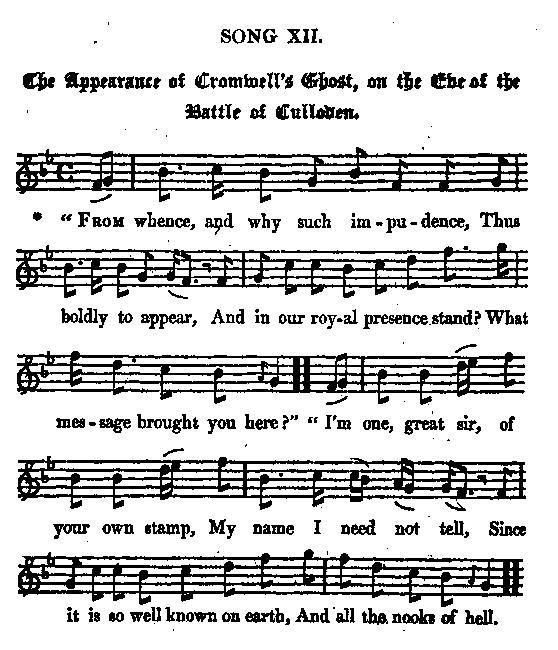

Cromwell's Ghost on the Eve of the Battle of Culloden
L'apparition du fantôme de Cromwell la veille de Culloden
From Hogg's "Jacobite Relics", Volume II, Appendix -Jacobite Song N°12, page 412
Tune - Mélodie"O'er Bogie"
from Hogg's "Jacobite Relics" 2nd Series N°AJ12 page 412
Sequenced by Christian Souchon
|
To the tune:
Hogg gives no information as to the origin of this tune. The "Bogie" is (here) a tributary of the River Deveron, which it joins near Huntly in Aberdeenshire, and the surrounding area is called Strathbogie (also the setting for the songs “Cauld kail in Aberdeen” ). - John Glen, in his "Early Scottish Melodies" (1900), dates the air to 1709 when it appeared in “Mrs. Crockat’s Music Book.” - The melody appears in the Drummond Castle Manuscript (in the possession of the Earl of Ancaster at Drummond Castle), inscribed "A Collection of Country Dances written for the use of his Grace the Duke of Perth by Dav. Young, 1734 ," - and is also contained in Robert Bremner's 1757 collection where we read that it is also known throughout the Shetlands as "Ower Bogie." - It is contained in Neil Stewart's 1761 collection (pg. 16). - As with many Scottish songs, the title appears in Henry Robson's list of popular Northumbrian song and dance tunes which he published c. 1800. - Scots poet Allan Ramsay gave famous lyrics set to the melody which appears in his "Tea Table Miscellany" (1724) (and, he set the tune to song N°14, "Well, I agree, ye're sure of me", in his "Gentle Shepherd" , 1725). Glen credits him with the song — although Stenhouse maintained the lyrics predated Ramsay. They tell of an elopement, with “O’er Bogie” referring to the leaving of the area for marriage and the world beyond. Ramsey’s chorus goes: I will awa' wi' my love, I will awa' wi' her, Tho' a' my kin had sworn and said I'll o'er Bogie wi' her. Source: Andrew Kuntz "Fiddler's Companion", (cf. Links) |
 |
A propos de la mélodie:
Hogg ne dit rien de l'origine de cette mélodie "Bogie" désigne (ici) un affluent de la Deveron, qu'il rejoint près de Huntly en Aberdeenshire. Le pays avoisinant s'appelle "Strathbogie" (il sert aussi de cadre aux chants sur le "Brouet froid d'Aberdeen" ). - John Glen, dans ses "Early Scottish Melodies" (1900), date cet air de 1709 , l'année de sa publication dans le “Livre de Musique de Mrs. Crockat.” - La mélodie figure sur le Manuscrit du château Drummond (de la collection du Comte d'Ancaster à Drummond Castle), intitulé "Recueil de contredanses rédigé à l'usage de Monseigneur le Duc de Perth par Dav. Young, 1734 ". - On la trouve aussi chez Robert Bremner, Recueil de 1757 où il est dit qu'elle est connue dans les Shetlands sous le nom de "Ower Bogie". - et dans le recueil de Neil Stewart, datant de 1761 (p. 16). - Comme bien d'autres chants écossais, le titre est cité par Henry Robson dans sa liste de chants et danses populaires de Northumbrie , publiée vers 1800. - Le poète écossais Allan Ramsay écrivit des paroles fameuses sur ce timbre pour la "Miscellanée de la Table de thé" (1724) (qu'il affecta au chant N°14, "Well, I agree, ye're sure of me", de son "Gentle Shepherd" , 1725). Glen lui attribue le chant — mais non Stenhouse qui affirme que les paroles sont antérieures à Ramsay. Il y est question d'un enlèvement, et “Par-delà la Bogie” sépare le lieu du mariage du reste du monde. Voici le refrain de Ramsay: M'enfuir avec mon aimée, M'enfuir avec ma chérie, Ma famille est engagée Tant pis! Passons la Bogie! Source: Andrew Kuntz "Fiddler's Companion", (cf. Liens) |

|
THE APPEARANCE OF CROMWELL'S GHOST ON THE EVE OF CULLODEN
1. " From whence and why such impudence, Thus boldly to appear, And in our royal presence stand? [1] What message brought you here ?" " I'm one, great sir, of your own stamp, My name I need not tell, Since it is so well known on earth, And all the nooks of hell. 2. " You've heard, no doubt, of mighty Noll, [2] " Who kept the world in awe; " And made these very walls to shake, " Whose word was then a law. " I come express to you, great sir, " From our infernal cell, " Where your great dad [3], and Nassau's prince, [4] " And Walpole [5], greet you well. 3. " With mighty news I fraughted come, " Here is a full detail, " Which Grosset brought express this night [6] " Straight from the field to hell. " It much exceeds the power of words, " Or painting, to describe " What change these news made on the look " Of all our scorched tribe. 4. " Such a procession, Pluto owns, " He never saw before, " What crowds of kings, and mitred heads, " But of usurpers more. " Your dad [7] and Nassau [4] first appeared, " Clad in their royal buff, " And loyal Sarum [8] next advanced " With his well singed ruff. 5. " Then Calvin and Hugh Peters they [9] " Joined Luther and John Knox ; " And Bradshaw with his loyal bench, [10] " A set of godly folks. " And I was stationed in the rear, " By right and due my post; " Where whigs and independents made " A most prodigious host. 6. " These worthies all, great sir, expect " Right soon to see you there, " Together with your Cumbrian duke [11] " And Shelly-coat, your heir [12]. " Thus my commission I've obeyed, " And e'er I, downward bend, " Shall wait with pleasure infinite " What answer you will send." 7. " Pray make my humble compliments " To all our friends below; " And for these welcome news you brought " Most grateful thanks I owe. " We still your principles pursue, " And shall subservient be,! " Till we and all our progeny " Our destined quarters see." Source: "The Jacobite Relics of Scotland, being the Songs, Airs and Legends of the Adherents to the House of Stuart" collected by James Hogg, volume II published in Edinburgh by William Blackwood in 1821. |
APPARITION DU FANTÔME DE CROMWELL LA VEILLE DE CULLODEN
1. " D'où viens-tu donc? Quelle impudence De te montrer ainsi En notre royale présence! [1] Que viens-tu faire ici?" " Sire, je suis votre reflet. Mon nom? Pourquoi le taire: Il est connu du monde entier, Comme de tout l'enfer. 2. " Chacun sait qui fut le grand Nolle. [2] Il fit trembler, je crois, Le monde et ces murs. Ses paroles Ont tenu lieu de lois. C'est toi que je viens voir, l'enfer M'envoie vers toi, vois-tu. Orange [4] ainsi que ton grand-père [3] Et Walpole te saluent. [5] 3. Chargé d'importantes nouvelles Qu'il faut que je détaille. Grosset, cette nuit, avec elles [6] Vint du champ de bataille. Les mots sont impuissants à dire, A peindre le malaise Profond qu'elles ont su produire. Au sein de la fournaise. 4. Non, de telles processions, Pluton n'en verra plus: Rois et évêques à foison; Usurpateurs, en sus. On vit ton papa [7] et Nassau [4] Venir en panoplie Sarum, le fidèle faraud [8] Et sa fraise roussie. 5. "Puis Calvin et Hugues Peters, [9] Bradshaw et ses amis; [10] Et John Knox, ainsi que Luther Tous ces êtres exquis! Moi, je me tenais loin derrière. Eu égard à mon rang; Et les Whigs tenaient à me faire Un cortège étonnant. 6. Ils comptent bien, ces braves gens, Que vous les rejoindrez, Toi, puis le Duc de Cumberland, [11] Et l'Encarapacé. [12] Je viens donc remplir ma mission Et ne redescendrai Qu'en possession de la répon- Se que vous leur ferez." 7. "Faites mes humbles compliments A nos amis d'en bas; Oui, je vous suis reconnaissant De ces nouvelles-là. Car en tant que digne héritier Appliquant vos préceptes: Le quartier à lui destiné, Chacun de nous l'accepte." (Trad. Christian Souchon (c) 2010) |
|
[1] Our royal presence: King George II is speaking.
[2] Noll: Cromwell's nickname. [3] Your grand-dad: presumably, Ernest-Augustus, Elector of Brunswick-Lüneburg who married in 1658 Sophia of the Palatinate, the Protestant grand-daughter of King James I who was declared heiress presumptive to Queen Anne by the Act of Settlement of 1701. In 1683, against the protestations of his five younger sons, he instituted primogeniture in his territories, so that they would not be further subdivided after his death, and also as a pre-condition for obtaining the electorship. [4] The Prince of (Orange -) Nassau deposed his father-in-law, King James II and reign over England, Scotland and Ireland as King William III. [5] Robert Walpole, the famous Whig statesman who served under George I and George II. He had to resign in 1742 and died in March 1745. [6] Captain Alexander Grosset was killed while serving as aide-de-camp to Lieutenant Colonel Lord Ancram who commanded the right wing of the government forces of the Duke of Cumberland at the Battle of Culloden in 1746. [7] Your dad: King George I who died in 1727. [8] Sarum: Latin for "Salisbury". Nickname of Bishop Gilbert Burns (1643 - 1715) who was considered by the Jacobites as a hypocrite who maligned them in his Memoirs. Though he had started his carrier as a Whig, he assisted William of Orange in his conquest of the throne. [9] Hugh Peters: was a fanatical preacher who served as chaplain to Cromwell. He was instrumental in inciting the people to regicide. He was executed after the Restoration. Knox' preaching caused Luther's and Calvin's doctrine to be adopted by most of the Lowlanders, prompting them to rebel against the Stuart Kings, whereas the Highlanders defended these monarchs. [10] John Bradshaw (1602 - 1659) was the President of the High Court of Justice for the trial of King Charles I in 1649. He declares Charles I guilty as a “Tyrant, Traitor, Murderer, and a public enemy” and did not allow the king any final words. [11] Cumbrian Duke: William Augustus, Duke of Cumberland (1721 - 1765), the younger son of George II who fought the battle of Culloden in which he completely destroyed the Jacobite forces. He was known ever after as "Butcher Cumberland", on account of the cruel repression he ordered against the Scottish "rebels", whereby he only executed the English and national demand. When the bloody vengeance was taken, the thoroughness of this repression caused revulsion and the nation made him its scape-goat, transfering on him their own culpability. [12] Shelly-coat: Prince of Wales Frederick (King George III's father) who died in 1751. |
[1] Notre royale présence: C'est le roi Georges II qui parle.
[2] Noll: le surnom de Cromwell. [3] Ton grand-père: il s'agit sans doute d'Ernest-Auguste, Electeur de Brunswick-Lunebourg qui épousa en 1658 Sophie du Palatinat, la petite-fille protestante du roi Jacques I qui fut déclarée héritière présomptive de la Reine Anne par l'Acte de Disposition de 1701. En 1683, sourd aux protestations de ses cinq fils cadets, il introduisit dans ses territoires le principe de primogéniture pour en empêcher le morcellement après sa mort et il en fit une condition préalable pour obtenir la dignité électorale. [4] Le Prince de (Orange -) Nassau évinça son beau-père, le roi Jacques II et règna sur l'Angleterre, l'Ecosse et l'Irlande sous le nom de Guillaume III. [5] Robert Walpole, le fameux homme d'état Whig qui fut l'équivalent d'un premier ministre sous Georges I et Georges II. Il dut démissionner en 1742 et mourut en mars 1745. [6] Le Capitaine Alexander Grosset fut tué alors qu'il était l'aide-de-camp du lieutenant-colonel Lord Ancram qui commandait l'aile droite de l'armée royale du Duc de Cumberland à la bataille de Culloden en 1746. [7] Ton papa: le roi George I qui mourut en 1727. [8] Sarum: le nom latin de "Salisbury". C'était le surnom de l'évêque Gilbert Burns (1643 - 1715) que les Jacobites tenaient pour un hypocrite qui les calomnia dans ses Mémoires. Bien qu'il eût été Whig à ses débuts, il aida Guillaume d'Orange à conquérir le trône. [9] Hugues Peters: c'était un prédicateur fanatique qui fut le chapelain de Cromwell. Il joua un rôle déterminant en tant qu'incitateur au régicide. Il fut exécuté après la Restauration. C'est un autre prédicateur, John Knox, qui répandit la doctrine de Luther et de Calvin parmi la majorité des habitants des Basses Terres et les incita à se rebeller contre les Stuarts, tandis que ceux de Hautes Terres devenaient leurs défenseurs. [10] John Bradshaw (1602 - 1659) fut le président de la Haute Cour de Justice qui jugea le roi Charles I en 1649. Il déclara Charles I coupable d'être un “tyran, un traître, un assassin et un ennemi de la société” et ne permit plus au roi de reprendre la parole. [11] Duc de Cumberland: Guillaume Auguste, Duc de Cumberland (1721 - 1765), fils cadet du roi Georges II qui commandait l'armée royale à la bataille de Culloden qui vit l'anéantissement des forces Jacobites. Par la suite, on lui décerna le surnom de "Cumberland le Boucher" en raison des cruelles représailles qu'il ordonna à l'encontre des "rebelles" écossais. Ce faisant, il ne faisait qu'exécuter ce que la nation attendait de lui. Une fois la sanglante vengeance assouvie, on n'eut plus que dégoût pour l'atrocité de sa répression et cette même nation fit de lui son bouc émissaire, reportant sur lui sa propre culpabilité. [12] "L'Encarapacé": le Prince de Galles Frédéric (le père du futur roi Georges III) qui mourut en 1751. |